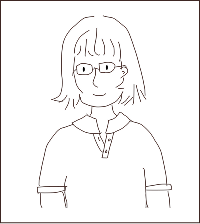
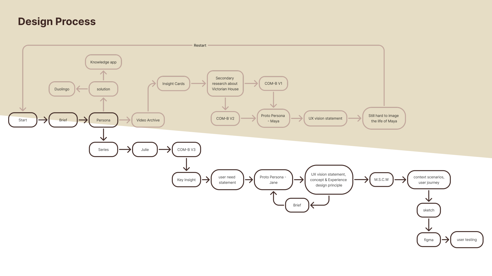
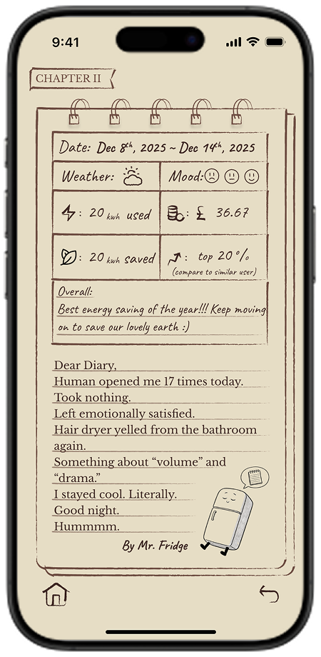
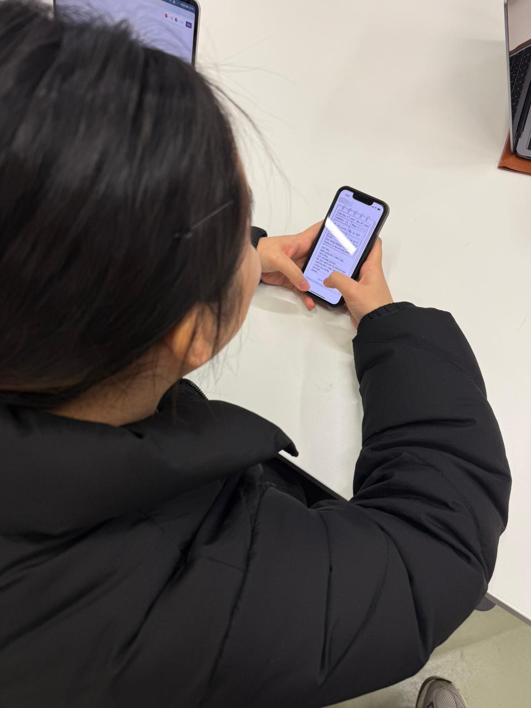
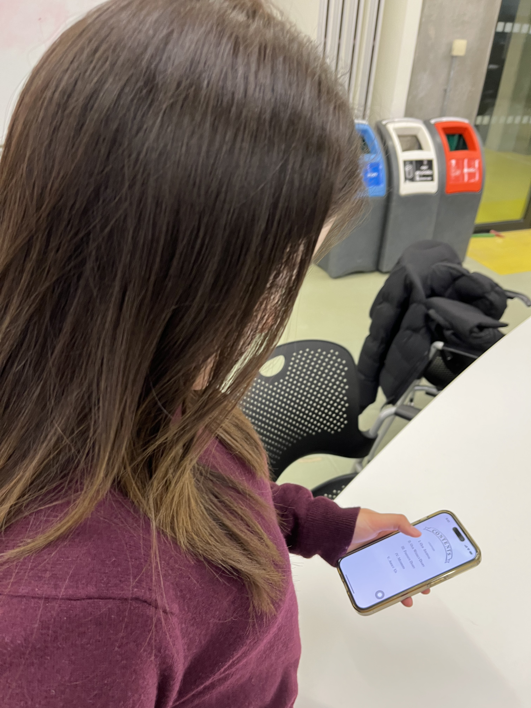

Energy Diary for an Old House
A mobile app concept that turns smart meter data into warm, anthropomorphic diaries, helping a climate‑conscious family feel closer to their Victorian home while reducing carbon emissions.
Making energy data feel human
The brief asked us to design a mobile app that uses smart meter data and AI to help UK households engage with low‑carbon technologies in ways that fit their values and everyday routines
Instead of designing another energy dashboard, I explored how data could feel more intimate and emotionally meaningful. The turning point came with an aha moment: what if the house and its appliances could help write a shared story with the user? That idea became a diary‑style app concept, where weekly energy reports are told through warm, characterful entries from the home itself.

Designing for Jane and her Victorian home
As a solo project, I was responsible for the full process from interpreting the module brief to delivering a clickable prototype and folio. The inspiration for my proto persona came from chatting with my house keeper, which made me reflect on how people care for a house emotionally, not just functionally.
- Used the research pack, video archive and COM‑B analysis to build a proto persona, Jane – a busy mum balancing climate anxiety and protecting her old house.
- Framed a UX vision and experience principles around warmth, relatedness and comfort rather than efficiency alone.
- Created flows and UI that translate smart meter data into emotional, character‑driven stories while still surfacing actionable insights.
- Planned and ran quick user testing sessions, then refined tone, layout and ethics based on feedback.
How the concept evolved
I iterated between discovery, framing and concept testing – restarting when early ideas did not fit the persona, and refining the UX vision and principles before committing to the diary concept.

Balancing climate action with a “warm” home
UX vision statement
There is an opportunity for a mobile app for a busy mum and progressive climate activist living in an old property, who feels anxious about not doing enough for the planet and about smart devices changing the character of her home. The app should help her confidently engage her family in saving energy and reducing carbon emissions, while preserving the warmth and story of the house.
Purpose
Reduce anxiety about “not doing enough” by showing clear progress and framing actions as part of a meaningful long‑term story rather than a never‑ending task list.
Relatedness
Keep the house, family and friends at the centre of the experience so that smart products feel like characters in a shared story, not cold machines.
Comfort
Make it easy to log goals and review energy use in a few taps, with simple language and a calm visual style that fits a cosy home rather than a technical dashboard.
Energy diaries written by your home
The concept reimagines smart meter data as a weekly “chapter” in the life of the house, narrated by different appliances. Underneath the playful surface, it still surfaces concrete numbers, anomalies and suggestions.

Weekly chapter view
Each week is presented as a chapter in the house’s diary, with smart meter data summarised as energy used, cost, energy saved and how the family compares to similar households. Instead of a neutral chart, the app picks one appliance – for example, the fridge – to “write” a short diary entry about what changed this week.
The diary draws attention to anomalies (like the washing machine using 10% more energy) and celebrates wins in a friendly, anthropomorphic voice, making data feel less abstract and more emotionally engaging.
Anthropomorphic appliance diaries
To keep the experience feeling “alive”, the app rotates different appliance personas and narrative styles, so the house never speaks in exactly the same way twice.
Rotating voices & suggestions
One week, the fridge might brag about how little the lights were on; another week, the washing machine might complain about late‑night cycles. Each diary entry highlights 1–2 concrete behaviours linked to smart meter data, followed by gentle suggestions rather than strict rules.
This approach aims to reduce eco‑anxiety by framing change as a playful collaboration with the house instead of a judgement. Over time, the family builds an emotional relationship with their energy data as part of the home’s ongoing story.


Checking tone and clarity with users
I ran quick think‑aloud sessions with classmates using the Figma prototype to understand how they read the diaries and whether the data felt trustworthy.
- Participants enjoyed the idea of the house “speaking”, but wanted clearer connections between diary lines and specific energy metrics.
- Some asked for control over how playful or serious the tone is, especially when reading entries with their children.
- Based on this, I tightened the copy, separated “story” text from “facts”, and made anomaly call‑outs more explicit.
Testing tone, privacy and responsible AI
User testing highlights
- Participants liked the diary idea but asked for clearer links between the story text and specific data points.
- Some wanted control over how “playful” the language is, especially when sharing entries with friends.
- Feedback led to tighter copy, more explicit anomaly call‑outs and clearer signposting of suggestions versus celebration.
Ethical safeguards
- User privacy in sharing – diary entries can be set to private / friends‑only / public when shared.
- Avoid harmful content – AI‑generated copy is constrained to avoid aggressive or guilt‑inducing language.
- Remove personal identifiers – smart‑meter analysis deliberately strips out direct IDs in processing.
- Clean datasets & regular inspection – training data is scoped to relevant energy patterns and reviewed regularly.
What this project produced
The module deliverables were an eight‑slide narrative, a clickable Figma prototype and a FigJam development folio covering discovery, vision framing and evaluation.
- Defined a persona‑driven concept that goes beyond dashboards to create a more emotional way to live with energy data.
- Demonstrated how smart meter data and AI could power both playful storytelling and practical guidance.
- Showed a coherent line from research insights and COM‑B analysis through to UX vision, principles and app flows.
Designing with feelings, not just facts
This project helped me practise turning a dense, technical brief into something that feels personal and emotionally resonant.
- How to use research packs and behaviour models like COM‑B to frame a specific persona and emotional context.
- How UX vision and experience principles can keep an app concept coherent as it moves from insight to interface.
- How to balance playful AI‑generated content with privacy, safety and the risk of increasing users’ climate anxiety.